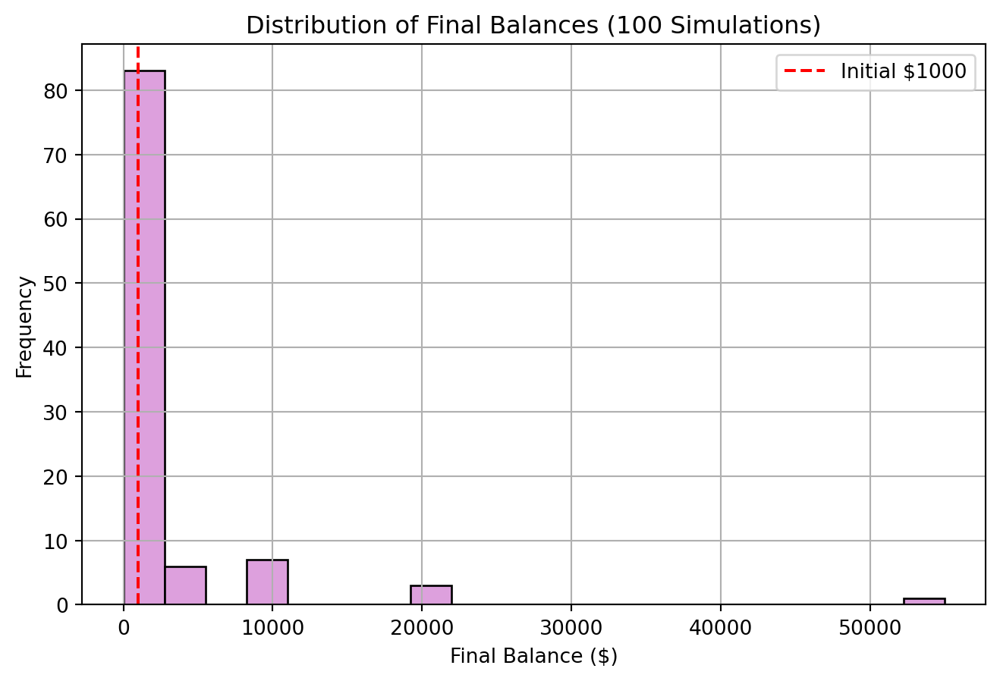
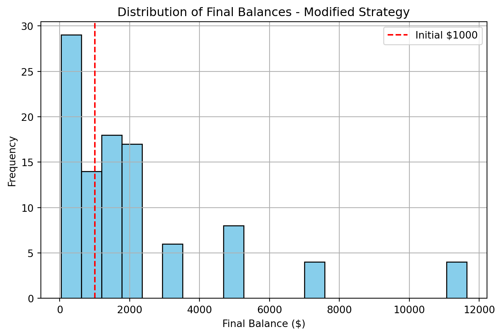

# Expected value calculation
initial = 1000
ev = 0.5 * (initial * 1.5) + 0.5 * (initial * 0.6)
ev1050.0This document answers all six parts of the Simulation Challenge using Python and Monte Carlo simulations.
# Expected value calculation
initial = 1000
ev = 0.5 * (initial * 1.5) + 0.5 * (initial * 0.6)
ev1050.0The expected value after one flip is $1050. This is positive, suggesting the game has a favorable average outcome — but compounding effects may change the reality.
Even though the expected value is positive, most single simulations will lose money. This happens because:
import numpy as np
import matplotlib.pyplot as plt
np.random.seed(42)
years = 55 - 18 # age 18 to 55 = 37 years
wealth = [1000]
for _ in range(years):
flip = np.random.binomial(1, 0.5)
if flip == 1:
wealth.append(wealth[-1] * 1.5) # heads
else:
wealth.append(wealth[-1] * 0.6) # tails
plt.figure(figsize=(8,5))
plt.plot(range(len(wealth)), wealth, marker="o")
plt.title("Single Simulation of Wealth Over Time")
plt.xlabel("Years")
plt.ylabel("Account Balance ($)")
plt.grid(True)
plt.show()
This single run shows how volatile the path is. Even with positive expected value, balances can drop dramatically when tails occur often.
np.random.seed(123)
n_sims = 100
final_balances = []
for _ in range(n_sims):
w = 1000
for _ in range(years):
flip = np.random.binomial(1, 0.5)
w = w * 1.5 if flip == 1 else w * 0.6
final_balances.append(w)
# Histogram
plt.figure(figsize=(8,5))
plt.hist(final_balances, bins=20, color="plum", edgecolor="black")
plt.axvline(1000, color="red", linestyle="--", label="Initial $1000")
plt.title("Distribution of Final Balances (100 Simulations)")
plt.xlabel("Final Balance ($)")
plt.ylabel("Frequency")
plt.legend()
plt.grid(True)
plt.show()
# Summary statistics
import pandas as pd
summary = pd.Series(final_balances).describe(percentiles=[0.25,0.5,0.75])
summary
count 100.000000
mean 2290.268362
std 6806.203977
min 0.059020
25% 36.022712
50% 225.141953
75% 1407.137206
max 54966.297106
dtype: float64The histogram shows most outcomes are below $1000, with a few huge winners on the far right. This creates a highly skewed distribution — average may be high, but median is low.
prob_above_1000 = np.mean(np.array(final_balances) > 1000)
prob_above_1000np.float64(0.26)Interpretation: The probability of ending with more than your starting $1000 is usually less than 50%, even though the expected value is positive.
def modified_strategy(years=37, initial=1000):
w = initial
for _ in range(years):
bet = 0.5 * w
flip = np.random.binomial(1, 0.5)
if flip == 1:
w += bet * 0.5 # +50% of bet
else:
w -= bet * 0.4 # -40% of bet
return w
np.random.seed(456)
mod_final = [modified_strategy() for _ in range(100)]
# Histogram
plt.figure(figsize=(8,5))
plt.hist(mod_final, bins=20, color="skyblue", edgecolor="black")
plt.axvline(1000, color="red", linestyle="--", label="Initial $1000")
plt.title("Distribution of Final Balances - Modified Strategy")
plt.xlabel("Final Balance ($)")
plt.ylabel("Frequency")
plt.legend()
plt.grid(True)
plt.show()
# Probability > $10,000
prob_above_10k = np.mean(np.array(mod_final) > 10000)
prob_above_10k
np.float64(0.04)Interpretation: The modified strategy smooths the ride — outcomes are less extreme than the original game. However, the probability of exceeding $10,000 is quite low, meaning both strategies are risky. Comparing the two: the original game has more extreme winners but also many losers, while the modified strategy offers more stable but smaller outcomes.
Expected value is positive, but median outcomes are poor.
Probability of beating $1000 is low despite high upside potential.
The modified strategy reduces volatility but doesn’t guarantee strong growth.
This demonstrates why Monte Carlo simulation is crucial: expected value alone can be misleading.